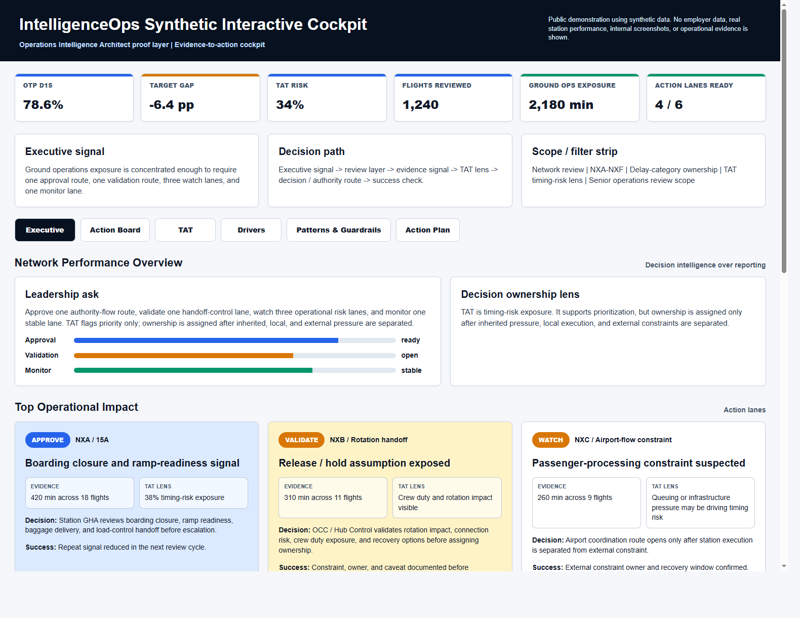

Operations Intelligence Architect I turn airport operations pressure into governed decision intelligence: clearer ownership, timing-risk visibility, and action routing before the recovery window closes. Public examples are sanitized.

Turnaround coordination, disruption handling, passenger constraints, ramp readiness, load-control handoffs, supplier response, and crew or rotation pressure all move at the same time. The hard part is not seeing that performance moved. It is separating inherited pressure from controllable execution quickly enough for leaders to choose the right action route.
For teams dealing with turnaround execution, disruption pressure, station reviews, and the gap between performance reporting and action.
For leadership rhythms where the question is not whether a KPI moved, but which decision can still change the outcome.
For teams that need operational logic to survive refreshes, handoffs, and executive use without metric drift.
For evaluating service trade-offs, recovery choices, supplier escalation, and the operational cost of delayed decisions.
For aviation technology and analytics vendors that need product logic grounded in how airport operations actually work.

How IntelligenceOps turns governed operational evidence into timing risk, ownership, and accountable action. Public examples are sanitized.


Decision ownership, timing risk, and action routing clarified before the review starts.
Built from aviation operations experience. No carrier data, no company information, no internal screenshots.
The data backbone behind the operations intelligence layer. Staging, cleaning, analytical views, delay-code mapping, and quality gates designed to keep decision metrics traceable.
Key insight: Every metric must trace back to a validated source query before it reaches an executive view.
Operational diagnostic linking delay code, category, station, and action route. Controllable and inherited pressure are separated at code level so accountability does not stay trapped inside broad categories.
Key insight: Delay ownership only becomes useful when it identifies who acts next.
Structured catalog of operational mechanisms across turnaround performance, inherited delay, controllability, and attribution. Each insight is tied to reproducible queries and decision use cases.
Key insight: KPI governance starts before visualization. Definitions must survive operational pressure.
Analysis layer for identifying when schedule padding hides operational issues and when turnaround variance becomes an early warning signal for departure delay.
Key insight: Turnaround monitoring is a leading indicator when it is connected to delay ownership.

Executive view showing how governed KPI logic can be translated into operational decision support. Trend context, delay category Pareto, controllable vs external split, distribution bands, and TAT monitoring sit in one review layer.
Key insight: The Pareto view turns scattered delay minutes into a visible action sequence.
A memo layer that converts validated operational evidence into executive-ready review outputs: KPI context, delay attribution, station focus, decision impact, caveats, and action lanes.
It is designed so the meeting does not start with rebuilding the picture. It starts with deciding what needs action.
Key insight: An executive decision memo is not a report. It is the bridge between operational evidence and accountable action.
I work in airport operations from Casablanca, with 20 years across ground operations, turnaround coordination, disruption handling, and performance review rhythms.
On my own time, I built the public sanitized systems shown here: governed SQL-style analytical layers, Python ETL, Streamlit decision views, Power BI executive concepts, automated executive memos, and CI checks that protect the data contract before analysis reaches users. Built from operations. Not from theory.
Most data teams do not feel the pressure of a live turnaround. Most operations teams do not design data contracts or scenario models. I work in the gap between both.
I welcome selective aviation operations intelligence conversations with serious operations leaders.
I design governed decision-intelligence systems for airlines and airport operations teams. If you need someone who understands both the operation and the data, I would like to hear about the problem you are solving.
Selective aviation operations intelligence conversations with serious operations leaders.